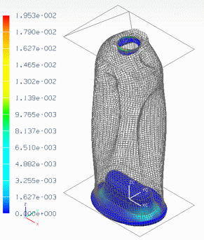

The series of activities in this section automate much of the workflow of a crush analysis of a consumer product packaging design. By combining an NX Open application with custom FEM templates, you can save time and resources, avoid repetitive steps, and ensure consistency when evaluating a large number of design alternatives.
The manual workflow for performing a crush analysis is as follows:
Open or import the geometry to be analyzed.
Create a FEM file using the crush analysis template. This template includes predefined physical and material properties for the mesh.
Append the crushing plates mesh to your FEM file.
Mesh the bottle.
Create a Simulation file.
Define the boundary conditions and solution.
Solve the model and examine the results.
